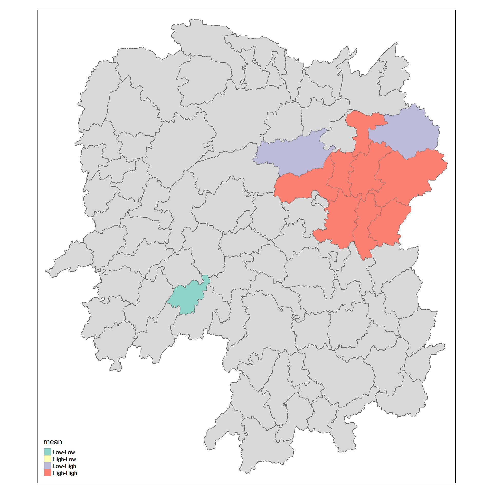
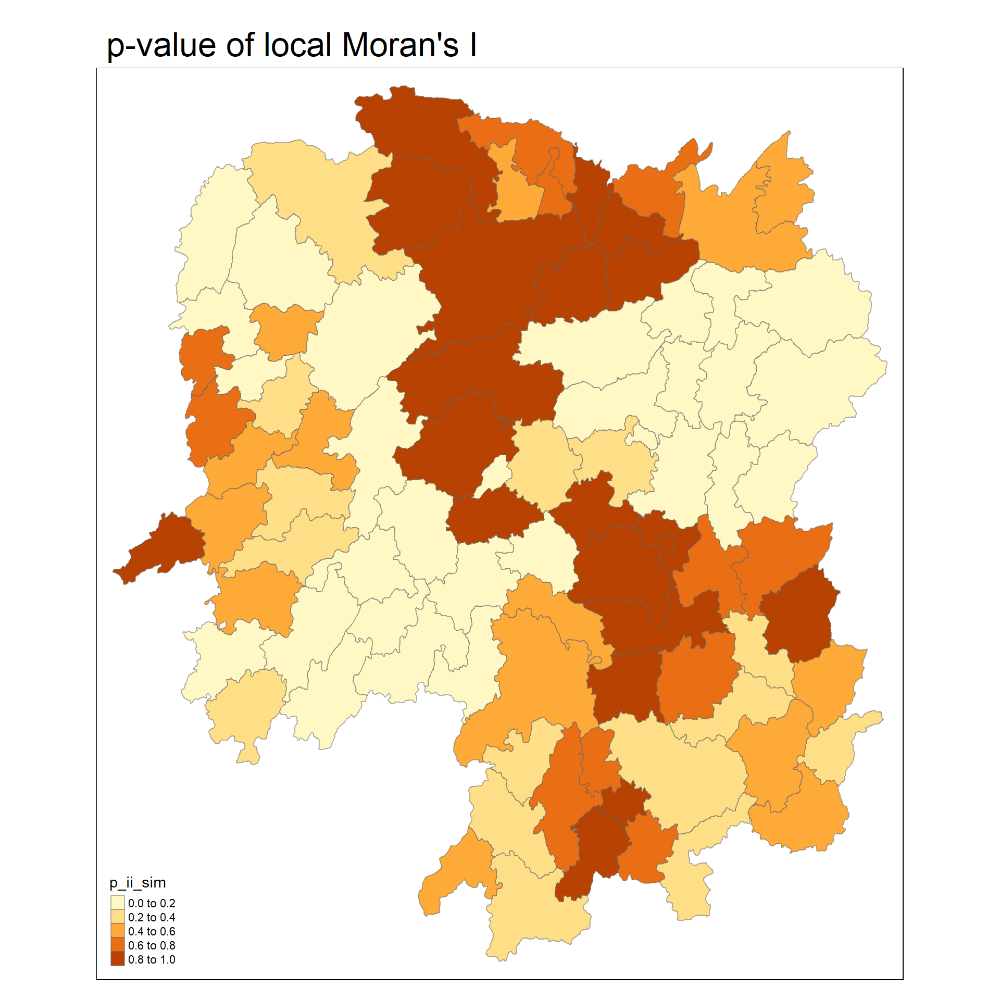
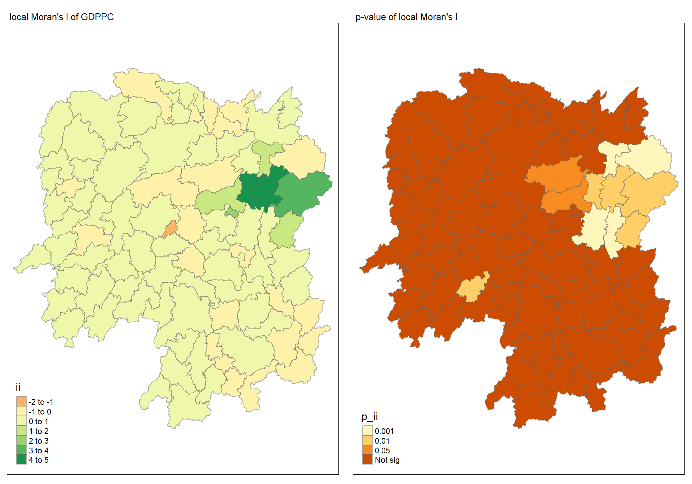
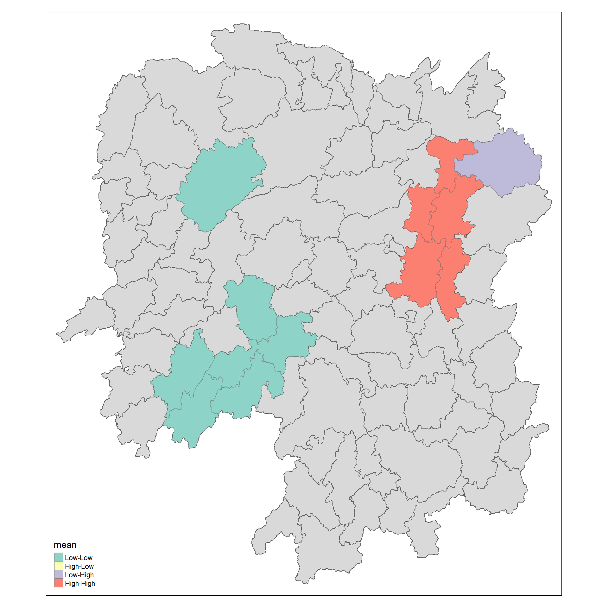
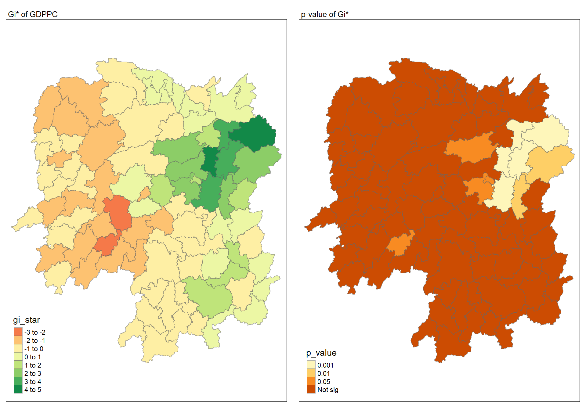
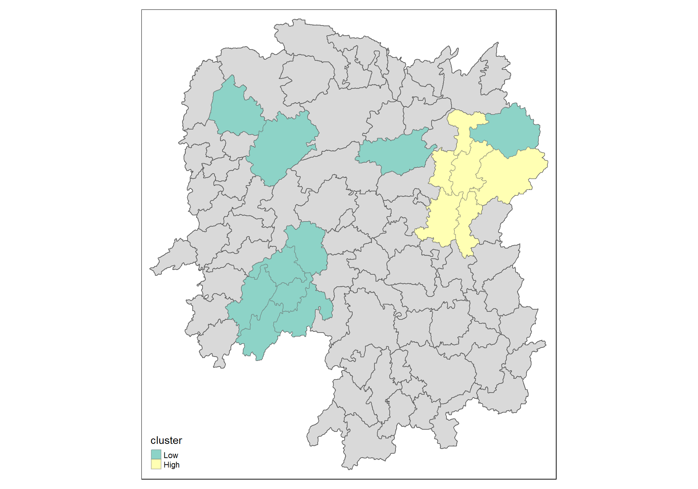

Content
- Introducing sfdep.
- sfdep creates an sf and tidyverse friendly interface to the package as well as introduces new functionality that is not present in spdep.
- sfdep utilizes list columns extensively to make this interface possible.”
School of Computing and Information Systems,
Singapore Management University
2024-09-24
Four R packages will be used for this in-class exercise, they are: sf, sfdep, tmap and tidyverse.
For the purpose of this in-class exercise, the Hunan data sets will be used. There are two data sets in this use case, they are:
Using the steps you learned in previous lesson, import Hunan shapefile into R environment as an sf data frame.
Reading layer `Hunan' from data source
`D:\tskam\ISSS626-AY2024-25Aug\In-class_Ex\In-class_Ex05\data\geospatial'
using driver `ESRI Shapefile'
Simple feature collection with 88 features and 7 fields
Geometry type: POLYGON
Dimension: XY
Bounding box: xmin: 108.7831 ymin: 24.6342 xmax: 114.2544 ymax: 30.12812
Geodetic CRS: WGS 84Using the steps you learned in previous lesson, combine the Hunan sf data frame and Hunan_2012 data frame. Ensure that the output is an sf data frame.
Note
For the purpose of this exercise, we only retain column 1 to 4, column 7 and column 15. You should examine the output sf data.frame to learn know what are these fields.
Important
In order to retain the geospatial properties, the left data frame must the sf data.frame (i.e. hunan)
Using the steps you learned in previous lesson, plot a choropleth map showing the distribution of GDPPC of Hunan Province.

tmap_mode("plot")
tm_shape(hunan_GDPPC) +
tm_fill("GDPPC",
style = "quantile",
palette = "Blues",
title = "GDPPC") +
tm_layout(main.title = "Distribution of GDP per capita by county, Hunan Province",
main.title.position = "center",
main.title.size = 1.2,
legend.height = 0.45,
legend.width = 0.35,
frame = TRUE) +
tm_borders(alpha = 0.5) +
tm_compass(type="8star", size = 2) +
tm_scale_bar() +
tm_grid(alpha =0.2)Notice that st_weights() provides tree arguments, they are:
Simple feature collection with 88 features and 8 fields
Geometry type: POLYGON
Dimension: XY
Bounding box: xmin: 108.7831 ymin: 24.6342 xmax: 114.2544 ymax: 30.12812
Geodetic CRS: WGS 84
First 10 features:
nb
1 2, 3, 4, 57, 85
2 1, 57, 58, 78, 85
3 1, 4, 5, 85
4 1, 3, 5, 6
5 3, 4, 6, 85
6 4, 5, 69, 75, 85
7 67, 71, 74, 84
8 9, 46, 47, 56, 78, 80, 86
9 8, 66, 68, 78, 84, 86
10 16, 17, 19, 20, 22, 70, 72, 73
wt
1 0.2, 0.2, 0.2, 0.2, 0.2
2 0.2, 0.2, 0.2, 0.2, 0.2
3 0.25, 0.25, 0.25, 0.25
4 0.25, 0.25, 0.25, 0.25
5 0.25, 0.25, 0.25, 0.25
6 0.2, 0.2, 0.2, 0.2, 0.2
7 0.25, 0.25, 0.25, 0.25
8 0.1428571, 0.1428571, 0.1428571, 0.1428571, 0.1428571, 0.1428571, 0.1428571
9 0.1666667, 0.1666667, 0.1666667, 0.1666667, 0.1666667, 0.1666667
10 0.125, 0.125, 0.125, 0.125, 0.125, 0.125, 0.125, 0.125
NAME_2 ID_3 NAME_3 ENGTYPE_3 County GDPPC
1 Changde 21098 Anxiang County Anxiang 23667
2 Changde 21100 Hanshou County Hanshou 20981
3 Changde 21101 Jinshi County City Jinshi 34592
4 Changde 21102 Li County Li 24473
5 Changde 21103 Linli County Linli 25554
6 Changde 21104 Shimen County Shimen 27137
7 Changsha 21109 Liuyang County City Liuyang 63118
8 Changsha 21110 Ningxiang County Ningxiang 62202
9 Changsha 21111 Wangcheng County Wangcheng 70666
10 Chenzhou 21112 Anren County Anren 12761
geometry
1 POLYGON ((112.0625 29.75523...
2 POLYGON ((112.2288 29.11684...
3 POLYGON ((111.8927 29.6013,...
4 POLYGON ((111.3731 29.94649...
5 POLYGON ((111.6324 29.76288...
6 POLYGON ((110.8825 30.11675...
7 POLYGON ((113.9905 28.5682,...
8 POLYGON ((112.7181 28.38299...
9 POLYGON ((112.7914 28.52688...
10 POLYGON ((113.1757 26.82734...In the code chunk below, global_moran() function is used to compute the Moran’s I value. Different from spdep package, the output is a tibble data.frame.
In general, Moran’s I test will be performed instead of just computing the Moran’s I statistics. With sfdep package, Moran’s I test can be performed by using global_moran_test() as shown in the code chunk below.
Moran I test under randomisation
data: x
weights: listw
Moran I statistic standard deviate = 4.7351, p-value = 1.095e-06
alternative hypothesis: greater
sample estimates:
Moran I statistic Expectation Variance
0.300749970 -0.011494253 0.004348351 Tip
alternative argument is “two.sided”. Other supported arguments are “greater” or “less”. randomization, andrandomization argument is TRUE. If FALSE, under the assumption of normality.In practice, Monte carlo simulation should be used to perform the statistical test. For sfdep, it is supported by globel_moran_perm()
It is always a good practice to use set.seed() before performing simulation. This is to ensure that the computation is reproducible.
Next, global_moran_perm() is used to perform Monte Carlo simulation.
The statistical report on previous tab shows that the p-value is smaller than alpha value of 0.05. Hence, we have enough statistical evidence to reject the null hypothesis that the spatial distribution of GPD per capita are resemble random distribution (i.e. independent from spatial). Because the Moran’s I statistics is greater than 0. We can infer that the spatial distribution shows sign of clustering.
Reminder
The numbers of simulation is alway equal to nsim + 1. This mean in nsim = 99. This mean 100 simulation will be performed.
LISA map is a categorical map showing outliers and clusters. There are two types of outliers namely: High-Low and Low-High outliers. Likewise, there are two type of clusters namely: High-High and Low-Low cluaters. In fact, LISA map is an interpreted map by combining local Moran’s I of geographical areas and their respective p-values.

In this section, you will learn how to compute Local Moran’s I of GDPPC at county level by using local_moran() of sfdep package.
The output of local_moran() is a sf data.frame containing the columns ii, eii, var_ii, z_ii, p_ii, p_ii_sim, and p_folded_sim.
localmoran_perm(), rank() and punif() of observed statistic rank for [0, 1] p-values using alternative= -p_folded_sim: the simulation folded [0, 0.5] range ranked p-value (based on https://github.com/pysal/esda/blob/4a63e0b5df1e754b17b5f1205b cadcbecc5e061/esda/crand.py#L211-L213)localmoran_perm, the output of e1071::skewness() for the permutation samples underlying the standard deviateslocalmoran_perm, the output of e1071::kurtosis() for the permutation samples underlying the standard deviates.In the code chunk below, tmap functions are used prepare a choropleth map by using value in the p_ii_sim field.
Warning
For p-values, the appropriate classification should be 0.001, 0.01, 0.05 and not significant instead of using default classification scheme.

For effective comparison, it will be better for us to plot both maps next to each other.

tmap_mode("plot")
map1 <- tm_shape(lisa) +
tm_fill("ii") +
tm_borders(alpha = 0.5) +
tm_view(set.zoom.limits = c(6,8)) +
tm_layout(main.title = "local Moran's I of GDPPC",
main.title.size = 0.8)
map2 <- tm_shape(lisa) +
tm_fill("p_ii",
breaks = c(0, 0.001, 0.01, 0.05, 1),
labels = c("0.001", "0.01", "0.05", "Not sig")) +
tm_borders(alpha = 0.5) +
tm_layout(main.title = "p-value of local Moran's I",
main.title.size = 0.8)
tmap_arrange(map1, map2, ncol = 2)In lisa sf data.frame, we can find three fields contain the LISA categories. They are mean, median and pysal. In general, classification in mean will be used as shown in the code chunk below.

HCSA uses spatial weights to identify locations of statistically significant hot spots and cold spots in an spatially weighted attribute that are in proximity to one another based on a calculated distance. The analysis groups features when similar high (hot) or low (cold) values are found in a cluster. The polygon features usually represent administration boundaries or a custom grid structure.

As usual, we will need to derive a spatial weight matrix before we can compute local Gi* statistics. Code chunk below will be used to derive a spatial weight matrix by using sfdep functions and tidyverse approach.
Note
include_self()is used.Now, we will compute the local Gi* by using the code chunk below.
HCSA <- wm_idw %>%
mutate(local_Gi = local_gstar_perm(
GDPPC, nb, wts, nsim = 99),
.before = 1) %>%
unnest(local_Gi)
HCSASimple feature collection with 88 features and 18 fields
Geometry type: POLYGON
Dimension: XY
Bounding box: xmin: 108.7831 ymin: 24.6342 xmax: 114.2544 ymax: 30.12812
Geodetic CRS: WGS 84
# A tibble: 88 × 19
gi_star cluster e_gi var_gi std_dev p_value p_sim p_folded_sim skewness
<dbl> <fct> <dbl> <dbl> <dbl> <dbl> <dbl> <dbl> <dbl>
1 0.261 Low 0.00126 1.07e-7 0.283 7.78e-1 0.66 0.33 0.783
2 -0.276 Low 0.000969 4.76e-8 -0.123 9.02e-1 0.98 0.49 0.713
3 0.00573 High 0.00156 2.53e-7 -0.0571 9.54e-1 0.78 0.39 0.972
4 0.528 High 0.00155 2.97e-7 0.321 7.48e-1 0.56 0.28 0.942
5 0.466 High 0.00137 2.76e-7 0.386 7.00e-1 0.52 0.26 1.32
6 -0.445 High 0.000992 7.08e-8 -0.588 5.57e-1 0.68 0.34 0.692
7 2.99 High 0.000700 4.05e-8 3.13 1.74e-3 0.04 0.02 0.975
8 2.04 High 0.00152 1.58e-7 1.77 7.59e-2 0.16 0.08 1.26
9 4.42 High 0.00130 1.18e-7 4.22 2.39e-5 0.02 0.01 1.20
10 1.21 Low 0.00175 1.25e-7 1.49 1.36e-1 0.18 0.09 0.408
# ℹ 78 more rows
# ℹ 10 more variables: kurtosis <dbl>, nb <nb>, wts <list>, NAME_2 <chr>,
# ID_3 <int>, NAME_3 <chr>, ENGTYPE_3 <chr>, County <chr>, GDPPC <dbl>,
# geometry <POLYGON [°]>For effective comparison, you can plot both maps next to each other as shown below.

tmap_mode("plot")
map1 <- tm_shape(HCSA) +
tm_fill("gi_star") +
tm_borders(alpha = 0.5) +
tm_view(set.zoom.limits = c(6,8)) +
tm_layout(main.title = "Gi* of GDPPC",
main.title.size = 0.8)
map2 <- tm_shape(HCSA) +
tm_fill("p_value",
breaks = c(0, 0.001, 0.01, 0.05, 1),
labels = c("0.001", "0.01", "0.05", "Not sig")) +
tm_borders(alpha = 0.5) +
tm_layout(main.title = "p-value of Gi*",
main.title.size = 0.8)
tmap_arrange(map1, map2, ncol = 2)Now, we are ready to plot the significant (i.e. p-values less than 0.05) hot spot and cold spot areas by using appropriate tmap functions as shown below.

Note
Figure above reveals that there is one hot spot area and two cold spot areas. Interestingly, the hot spot areas coincide with the High-high cluster identifies by using local Moran’s I method in the earlier sub-section.